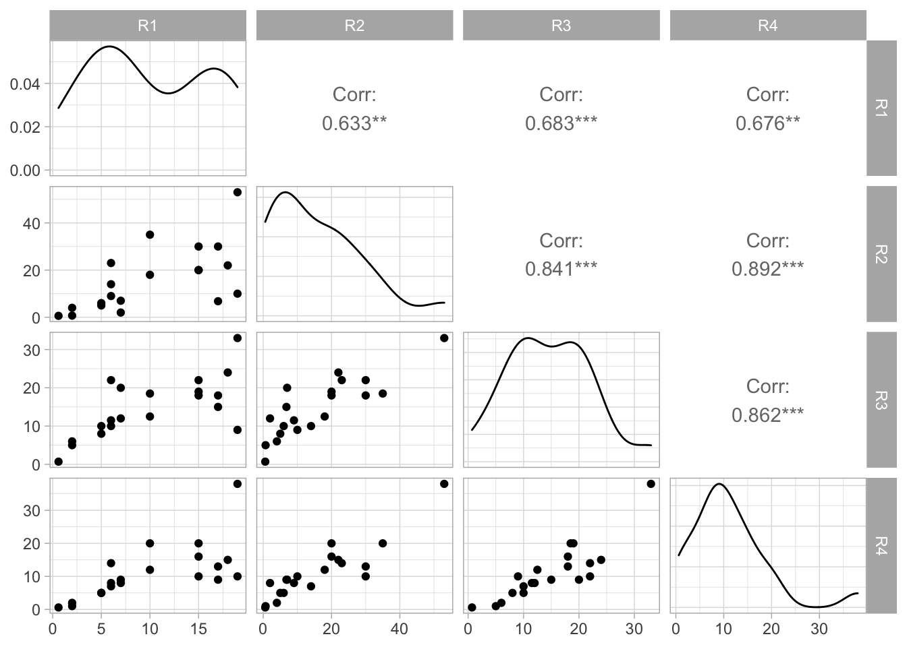
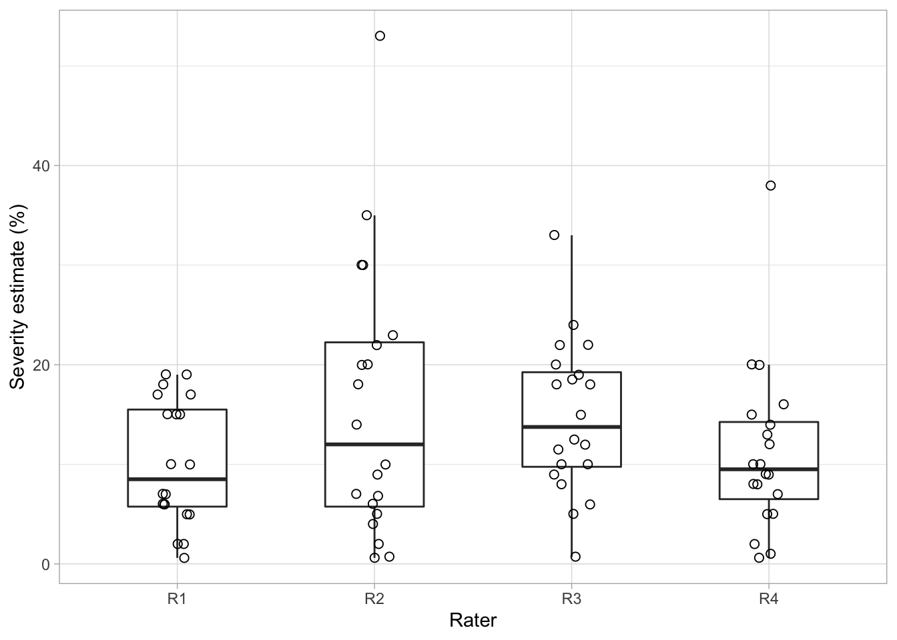
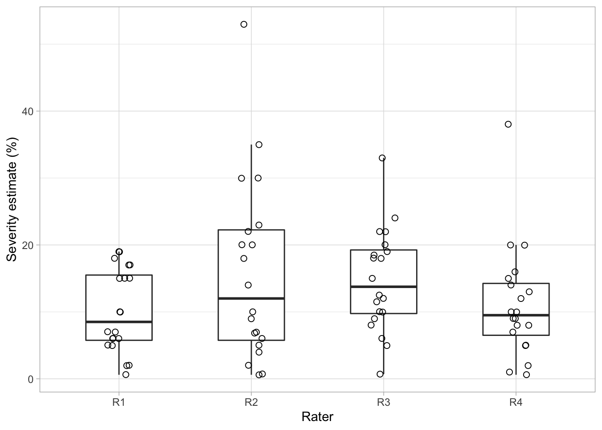

library(tidyverse)
sbr <- tribble(
~leaf, ~R1, ~R2, ~R3, ~R4,
1L, 0.6, 0.6, 0.7, 0.6,
2L, 2, 0.7, 5, 1,
3L, 5, 5, 8, 5,
4L, 2, 4, 6, 2,
5L, 6, 14, 10, 7,
6L, 5, 6, 10, 5,
7L, 10, 18, 12.5, 12,
8L, 15, 30, 22, 10,
9L, 7, 2, 12, 8,
10L, 6, 9, 11.5, 8,
11L, 7, 7, 20, 9,
12L, 6, 23, 22, 14,
13L, 10, 35, 18.5, 20,
14L, 19, 10, 9, 10,
15L, 15, 20, 19, 20,
16L, 17, 30, 18, 13,
17L, 19, 53, 33, 38,
18L, 17, 6.8, 15, 9,
19L, 15, 20, 18, 16,
20L, 18, 22, 24, 15
)3 Reliability and accuracy
This is a work in progress that is currently undergoing heavy technical editing and copy-editing
3.1 Terminology
Disease severity, mainly when expressed in percent area diseased assessed visually, is acknowledged as a more difficult and less time- and cost-effective plant disease variable to obtain. However, errors may occur even when assessing a more objective measure such as incidence. This is the case when an incorrect assignment or confusion of symptoms occur. In either case, the quality of the assessment of any disease variable is very important and should be gauged in the studies. Several terms can be used when evaluating the quality of disease assessments, including reliability, precision, accuracy or agreement.
Reliability: The extent to which the same estimates or measurements of diseased specimens obtained under different conditions yield similar results. There are two types. The inter-rater reliability (or reproducibility) is a measure of consistency of disease assessment across the same specimens between raters or devices. The intra-rater reliability (or repeatability) measures consistency by the same rater or instrument on the same specimens (e.g. two assessments in time by the same rater).
Precision: A statistical term to express the measure of variability of the estimates or measurements of disease on the same specimens obtained by different raters or instruments. However, reliable or precise estimates (or measurements) are not necessarily close to an actual value, but precision is a component of accuracy or agreement.
Accuracy or agreement: These two terms can be treated as synonymous in plant pathological research. They refer to the closeness (or concordance) of an estimate or measurement to the actual severity value for a specimen on the same scale. Actual values may be obtained using various methods, against which estimates or measurements using an experimental assessment method are compared.
3.2 Statistical summaries
A formal assessment of the quality of estimates or measures is made using statistical summaries of the data expressed as indices that represent reliability, precision and accuracy. These indices can further be used to test hypothesis such as if one or another method is superior than the other.
3.2.1 Reliability
3.2.1.1 Inter-rater reliability
To calculate measures of inter-rater reliability, we will work with a fraction of a larger dataset used in a published study. There, the authors tested the effect of standard area diagrams (SADs) on the reliability and accuracy of visual estimates. The selected dataset consists of five columns with 20 rows. The first is the leaf number and the others correspond to assessments of percent severity by four raters (R1 to R4). Each row correspond to one symptomatic leaf. Let’s assign the tibble to a dataframe called sbr.
A first, exploratory analyses, we can perform is to visualize the estimates for each leaf across the raters, so we can appraise how the individual estimates differ across them.
# set the global theme
theme_set(theme_light())
# transform from wide to long format
sbr2 <- sbr |>
pivot_longer(2:5, names_to = "rater",
values_to = "estimate")
# create the plot
sbr2 |>
ggplot(aes(leaf, estimate, color = rater,
group = leaf))+
geom_point()+
geom_line()
Alternatively, we can visualize the distribution of the estimates by rater using boxplots.
sbr2 |>
ggplot(aes(rater, estimate))+
geom_boxplot(outlier.colour = NA, width =0.5)+
geom_jitter(width = 0.1,shape = 1, size =2)
Another nice visualization is the correlation matrix of the estimates between all possible pair of raters. We can use the ggpairs function of the GGally package for this task.
library(GGally)Registered S3 method overwritten by 'GGally':
method from
+.gg ggplot2theme_set(theme_light())
# create the new dataframe with only raters
raters <- sbr[,2:5]
ggpairs(raters)
Note that the correlation coefficients vary across all pairs of rater. In fact, the means of these correlations, or the respective squared values (R2) can be used as a measure of inter-rater reliability. We can further examine the pair-wise correlations in more details using the correlation function of the performance package.
library(correlation)
raters_cor <- correlation(raters)
raters_cor# Correlation Matrix (pearson-method)
Parameter1 | Parameter2 | r | 95% CI | t(18) | p
-----------------------------------------------------------------
R1 | R2 | 0.63 | [0.26, 0.84] | 3.46 | 0.003**
R1 | R3 | 0.68 | [0.34, 0.86] | 3.96 | 0.003**
R1 | R4 | 0.68 | [0.33, 0.86] | 3.89 | 0.003**
R2 | R3 | 0.84 | [0.64, 0.94] | 6.60 | < .001***
R2 | R4 | 0.89 | [0.74, 0.96] | 8.38 | < .001***
R3 | R4 | 0.86 | [0.68, 0.94] | 7.20 | < .001***
p-value adjustment method: Holm (1979)
Observations: 20The means of the correlations or the respective coefficient of determination can be easily obtained as follows.
raters_cor$r[1] 0.6325037 0.6825936 0.6756986 0.8413333 0.8922181 0.8615470# means of Pearson's r
mean(raters_cor$r) [1] 0.7643157# means of R2
mean(raters_cor$r^2) [1] 0.5947869